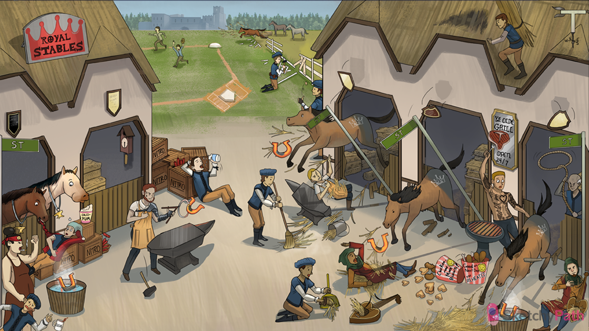

Coronary crown: coronary artery disease (CAD) is the most common cause of ischemic heart disease
“70”-shaped tongs: fixed coronary plaques causing >70% stenosis will present clinically (stable angina)
Clutching chest over anvil: stable angina (predictable episodes chest pain and pressure worse with exertion)
Plaque secured above stable: stable fixed atherosclerotic plaques cause stable angina (predictable symptoms)
Dark spot on inner horseshoe surface: stable angina involves transient subendocardial ischemia
Tired blacksmith with armor on left arm: typical symptoms of stable angina include chest pressure/pain which can radiate to the left arm and chin, diaphoresis, and dyspnea (elderly, diabetic, female patients may have minimal/atypical sx!)
Relaxing on nitro crate: stable angina is relieved with rest or nitroglycerine (usually <30 min)
Sleeping stable boy: vasospastic (Prinzmetal) angina symptoms occur at rest, more commonly at night
Twisted red sleeve: vasospastic angina is caused by transient coronary vasospasm
Startled awake: the paroxysmal vasospasm seen in vasospastic angina is likely due to smooth muscle hyper-reactivity in the coronary artery wall
Plaque mounted above stabe: the paroxysmal vasospasm seen in vasospastic (Prinzmetal) angina commonly occurs over a stable atherscleotic coronary plaque (may occur in disease free vessels!)
Relaxing on nitro box: nitroglycerin improves symptoms of vasospastic angina
“Calci-Yum” icecream: calcium channel blockers are the first-line therapy for long term management of vasospastic (Prinzmetal) angina (vasodilate and decrease spasticity)
Smoker: cigarette smoking is a major risk factor for prinzmetal angina (encourage your patient to quit!)
Sumo stable manager with cocoa kid: sumatriptan and sympathomimetic agents (e.g. cocaine) can precipitate vasospastic angina
Ruptured stable: plaque rupture
Thrombotic hay released toward home plate: atheromatous plaque rupture leads to exposure of thrombogenic substances → platelet and coagulation pathway activation → luminal thrombus formation
Repairing ruptured fence: plaque rupture is quite common (repeated cycles of plaque disruption and repair are usually subclinical!)
“ACS” horse rupture: acute coronary syndrome (ACS) includes unstable angina, NSTEMI, STEMI (destabilized coronary plaque → occlusive thrombus → cardiac ischemia or infarction)
Disrupted plaque: ACS (e.g. unstable angina) occurs due to acute plaque destabilization (rupture, erosion)
Hay scattered from rupture: plaque rupture/erosion exposes prothrombotic surfaces → occlusive luminal thrombus → cardiac ischemia or infarction (ACS)
Flipping coin: we have no good way of predicting which plaques are vulnerable to rupture (NOT necessarily the largest or most occlusive)
Sweeping up thrombotic hay: UNSTABLE ANGINA is caused by a transient (or only partially occlusive) thrombus
Partially filled lumen: UNSTABLE ANGINA is caused by a partially occlusive (or transient) thrombus
Falling anvil: UNSTABLE ANGINA presents with unstable symptoms (new onset angina, angina with less exertion or at rest)
Broken heart string: during NSTEMI, ischemia progresses to infarction and myocardial cell death
Disrupted plaque: myocardial infarction (NSTEMI and STEMI) occurs due to acute plaque destabilization (rupture, erosion)
Falling StreeT sign: NSTEMI often presents with ST segment depressions in ECG leads that correspond to the region of infarcted myocardium
Elevated StreeT sign: STEMI presents with ST segment elevations in ECG leads that correspond to the region of infarcted myocardium
Broken heart string: during STEMI, ischemia progresses to infarction and myocardial cell death
Partially filled lumen: NSTEMI is caused by a partially occlusive (or transient) thrombus
Sweeping up thrombotic hay: NSTEMI is caused by a transient (or only partially occlusive) thrombus
Dark spot on inner horseshoe surface: NSTEMI involves subendocardial region of infarction/ cell death (ST depressions on ECG = subendocardial involvement)
Completely filled lumen: STEMI is caused by a fully occlusive (or prolonged) thrombus
Full thickness of horseshoe dark: STEMI involves transmural infarction/ cell death (ST elevations on ECG = transmural involvement)
T weather vane: hyperacute T waves within seconds corresponding to area of ischemia (STEMI progression of ECG changes 1of4)
Elevated ST: “tombstone” shaped ST elevations within minutes, corresponding to the area of infarction (STEMI progression of ECG changes 2of4)
“Q” lasso: after initial ST changes, negative Q waves develop corresponding to the area of necrosis (STEMI progression of ECG changes 3of4)
Inverted T shadow: after initial ST changes, T wave inversions (STEMI progression of ECG changes 4of4 )
Thatcher with bundle of sticks: new-onset left bundle branch block is also diagnostic of STEMI (LBB is supplied by LAD)
Falling StreeT sign: unstable angina will present with ST segment depressions in ECG leads that correspond to the region of ischemia
Dark spot on inner horseshoe surface: unstable angina involves subendocardial ischemia (ST depressions on ECG = subendocardial involvement)
Entire thickness of horseshoe dark: vasospastic (Prinzmetal) angina involves transient transmural ischemia (ST elevations on ECG = transmural involvement)
Elevated StreeT sign: vasospastic angina presents with transient ST segment elevations in ECG leads that correspond to the region of ischemic myocardium
Grillmaster holding steak: Death and rupture of cardiac myocytes in NSTEMI and STEMI leads to spillage of cellular enzymes, one of which is Troponin
ChicKen bucket “now with More Biscuits!” : creatine kinase, isoform MB (CK-MB), is a cardiac-specific serum marker used to detect infarction (diagnose NSTEMI and STEMI)
T-bone steak : troponins are serum markers used to detect infarction (diagnose NSTEMI and STEMI) (Troponin I is more SPECIFIC for cardiac muscle damage - troponin T is more SENSITIVE)
T-bone 24/7: serum troponin levels peak ~24hrs after MI, and remain elevated for ~7days
“good the next day”: serum CK-MB levels peak in ~24hrs, and fall over the next ~24hrs
“try reheated”: serum CK-MB can be used to diagnose reinfarction (relatively short time course of elevation and return to baseline)